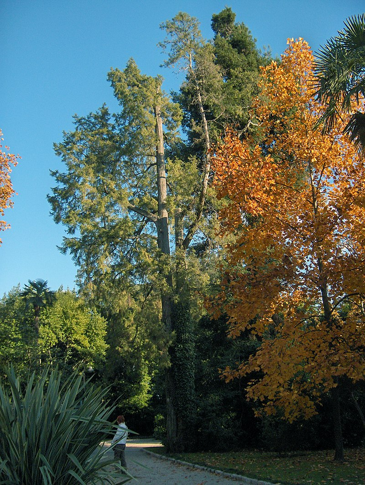

1. Đặc điểm hình thái
Cây gỗ nhỡ, cao 15- 20m, có tán hình tháp, vỏ thân màu đỏ nâu và nhẵn. Cành mọc đứng, đầu rủ xuống. Cành nhỏ, dẹt, xếp ít nhiều trên một mặt phẳng. Lá hình vảy, màu lục lam, mọc thành 4 dãy, hai dãy lưng bụng hình vảy dẹt, ôm sát cành, trừ đầu nhọn tự do, ở mép lá có răng và có tuyến ở lưng không rõ, dài 6 – 7mm; hai dãy lá bên hình thuyền, có đầu nhọn, nón đực hình trứng – thuôn, tiết diện 4 cạnh; gồm 6 – 8 đôi nhị, mỗi nhị mang 4 – 5 túi phấn.
Nón cái mọc đơn độc ở đầu cành, khi trưởng thành gần hình cầu, đường kính 1 – 2cm, gồm 6 – 8 vảy, hình 4 – 5 cạnh: có mái hơi bị dẹt với môt mũi nhọn cong ở giữa. Hạt 3 – 5 ở mỗi vảy hữu thụ, hinh thuôn ngắn- dẹt, màu nâu đỏ, rộng hơn và có một mũi nhọn ở đầu, có cánh rộng với nhiều điểm tuyến tiết nhựa đỏ.

2. Phân bố
Hà Giang (Đồng Văn) và Lạng Sơn (Chi Lăng: Sông Hóa).